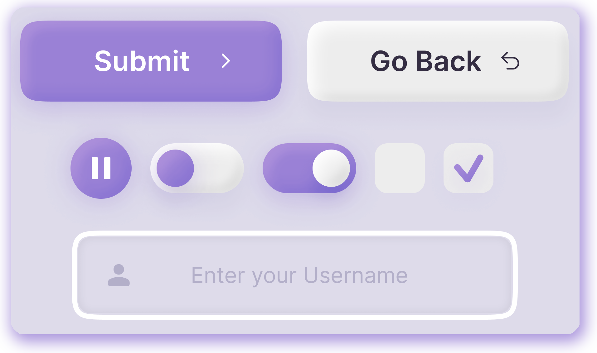
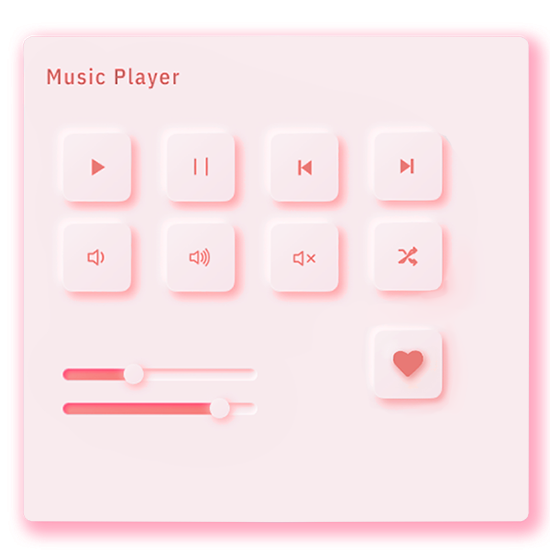

Claymorphism
Claymorphism is a type of computer animation technology developed in the early 2000s by the software company Clayanimation. It utilizes a combination of motion-capture and motion-morph techniques to create realistic and lifelike animations. The system allows for the animation of entire scenes, from individual characters to complex environments. Claymorphism is composed of three components: the Clayanimation software, the Claymorphism Library of motion-capture data, and the Claymorphism Studio, which includes the tools to manipulate and combine the motion data to create animations. The software was used to create several feature-length animated films, which received critical acclaim for their realistic and lifelike animation. Claymorphism is praised for its ability to create high-quality, realistic animations while still being easy to use and cost-effective. It is a popular technology used in the animation industry, and continues to be developed and improved by Clayanimation.
 